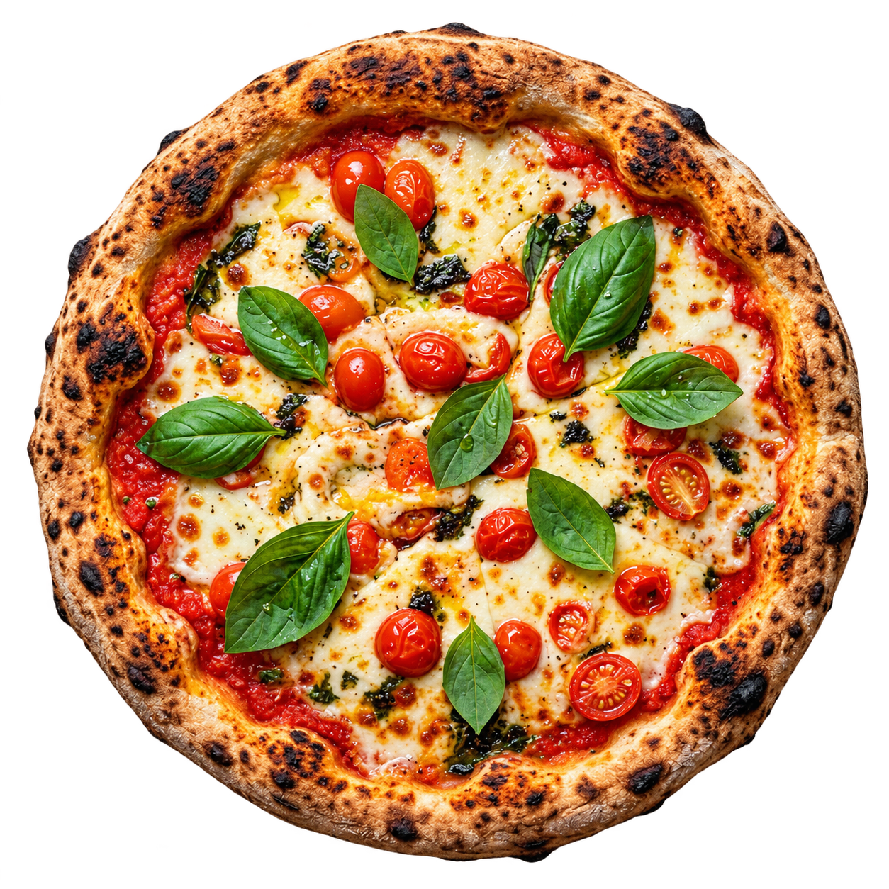
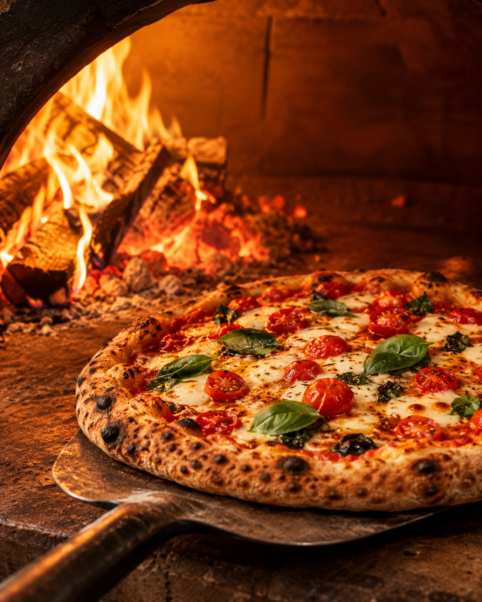

Forneria Donno
Pizzaria artesanal
Massa fermentada e forno a lenha
Uma mesa, uma boa pizza.
Massa fermentada por 48 horas, assada em forno a lenha e servida em tamanho individual — para reunir quem você gosta e provar mais de um sabor.


A experiência Donno
Feita sem pressa.
Servida no ponto certo.
Pizza artesanal com massa fermentada, assada em forno a lenha e servida em um ambiente familiar. Tamanhos menores deixam a experiência mais leve, ágil e cheia de possibilidades.
48h
de fermentação
Lenha
forno de alta temperatura
Individual
mais sabores na mesa
Reserva demonstrativa
Rua Exemplo, 000 · Bairro Modelo · Cidade Demonstrativa/UF
WhatsApp fictício: (00) 00000-0000
Quero reservar uma mesa